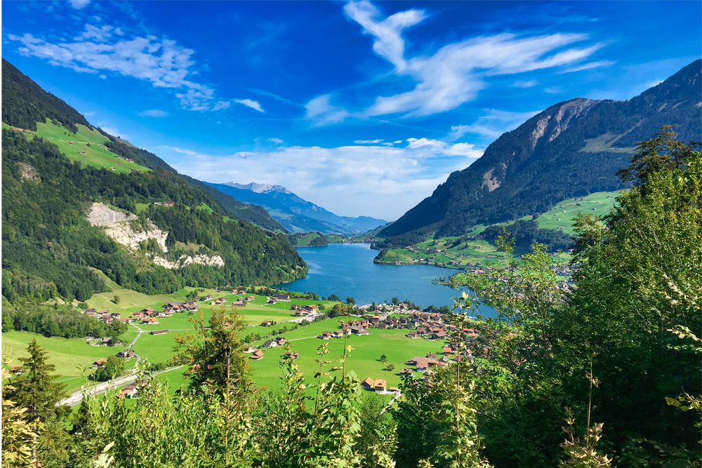

Welcome
The Swiss Alps are one of Europe’s richest and most fascinating biodiverse areas, it is home to unique plants, iconic animals, and even cold-adapted bacteria. All these species have tight ecological links, and are all sensitive to warming, habitat fragmentation, and tourism effects (WWF, n.d.).
Main Topics
- Animals like the chamois, ibex, marmot, lynx, and grayling; and what they do for the swiss alps ecosystem (Swiss National Park, n.d.; swissinfo.ch, 2021; Eawag, 2023).
- Alpine plants like the arolla pine, larch, cushion plants, and spiniest thistle; and who depends on them to survive (Swiss National Park, n.d.; JRC, n.d.; Chen et al., 2017; Cirsium spinosissimum, 2025).
- Cold-adapted bacteria in alpine soils, like the Salmonella (Adamczyk et al., 2019; Zumsteg et al., 2012).
- How garbage and climate change threaten connected food webs, and what effect tourists can have on the enviroment of the swiss alps (WWF, 2023; Reuters, 2024).